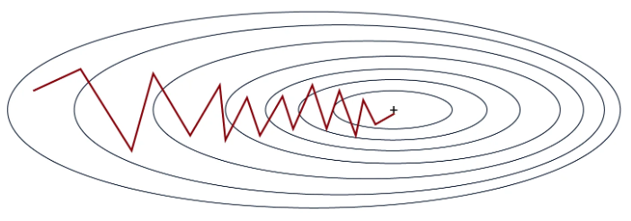

Understanding Different Optimizers#
In the first lesson, we introduced gradient descent, the simplest optimizer for training deep learning models. Then, we used stochastic gradient descent with mini-batches or Adam, depending on the scenario.
The optimizer adjusts the model parameters during training to minimize the loss. Choosing a good optimizer impacts the model’s performance and convergence speed.
This lesson presents the different existing optimizers (non-exhaustive list) along with their advantages and disadvantages. In practice, Adam is often the best choice, but you can test other optimizers and different learning rate values (the optimal value varies depending on the chosen optimizer).
This lesson is inspired by this blog post for explanations and reuses the figures.
Gradient Descent#
Let’s start with a reminder about the gradient descent algorithm. It can be simply defined by the following equation: \(\theta = \theta - \alpha \cdot \nabla L(\theta)\) where \(\theta\) represents the model parameters, \(L(\theta)\) the loss over the entire dataset, and \(\alpha\) the learning rate.
In summary, at each training step, we adjust the model parameters to minimize the loss over the entire dataset.
Here is a figure illustrating the principle of gradient descent:

This approach is simple to implement and works well on small datasets if the learning rate is well chosen. However, since we calculate the loss over the entire dataset before adjusting the weights, this method is very slow for large datasets and impractical. Additionally, the choice of learning rate is crucial and must be precise, which is not always straightforward.
Stochastic Gradient Descent#
This method adapts gradient descent for large datasets. Instead of modifying the parameters after processing all the data, we calculate the loss on a portion of the data (a mini-batch) and adjust the weights based on this loss. This is why it is called a stochastic method: adjustments are made on a portion of the data, which may not always reduce the global loss. In practice, after several iterations, the global loss decreases and the model converges faster.
The formula is almost identical: \(\theta = \theta - \alpha \cdot \nabla L(\theta;x^{(i)};y^{(i)})\) where \((x^{(i)},y^{(i)})\) represents a mini-batch of data.

As shown in the figure, the slope is not a straight line, but the model eventually converges to the global minimum.
This method is much faster than classical gradient descent, especially on large datasets. It also helps avoid local minima more easily due to the instability of the process. However, this instability requires a well-chosen learning rate to work optimally.
Stochastic Gradient Descent with Momentum#
This optimizer builds on the principle of stochastic gradient descent by adding a momentum term. As its name suggests, this term helps remember the direction of the previous optimization and pushes the current optimization to continue in the same direction. This term is calculated and updated via an exponentially decaying average. It is very useful for solving the problem of weak gradients (flat regions).
The formula is as follows: \(v = \beta \cdot v + (1 - \beta) \cdot \nabla_\theta L(\theta; x^{(i)}; y^{(i)})\) \(\theta = \theta - \alpha \cdot v\) where \(v\) is the momentum vector and \(\beta\) is a hyperparameter (calculated by exponentially decaying average) that adjusts the impact of the current value.

In practice, this helps traverse the flat regions of the loss function more efficiently while increasing the convergence speed. However, the choice of the momentum parameter is important because too large a momentum could cause us to skip the optimal solution. In practice, this term is chosen based on the size of the mini-batch (batch size).
Exponentially decaying average: A data smoothing method where each new value has an exponentially decreasing weight, giving more importance to recent values while gradually reducing the impact of past values.
Adagrad#
Adagrad is an optimizer that adjusts the learning rate per parameter during training. The learning rate of each parameter is based on the history of gradients. The idea is that frequently adjusted parameters will have a smaller learning rate than those rarely adjusted.
The formula is as follows: \(g = \nabla_\theta L(\theta; x^{(i)}; y^{(i)})\) \(G = G + g \odot g\) \(\theta = \theta - \frac{\alpha}{\sqrt{G + \epsilon}} \odot g\) where \(G\) is the matrix that accumulates the square of the gradients (to avoid negative values) and \(\epsilon\) is a small value to avoid division by zero.
This method is effective when the training data is very different from each other, as it adjusts the parameters based on their frequency of occurrence. However, the learning rate continuously decreases, which can lead to very slow convergence or even non-convergence if the learning rate becomes too small before the end of optimization.
RMSProp#
RMSProp is based on the same idea as Adagrad but corrects some of its disadvantages. Instead of gradually decreasing the learning rate during training, RMSProp uses an exponentially decaying average on the squares of the gradients, unlike Adagrad which sums them. This corrects the main problem of Adagrad, namely the continuous decrease of the learning rate without the possibility of going back.
The formula for RMSProp is as follows: \(g = \nabla_\theta L(\theta; x^{(i)}; y^{(i)})\) \(G = \beta \cdot G + (1 - \beta) \cdot g \odot g\) \(\theta = \theta - \frac{\alpha}{\sqrt{G + \epsilon}} \odot g\) where \(\beta\) is the parameter for managing the exponentially decaying average.
The advantages are the same as with Adagrad, except that convergence is faster. However, sometimes this is not enough and convergence remains too slow.
AdaDelta#
AdaDelta is an optimizer quite similar to RMSProp, but it does not require a learning rate as a hyperparameter. To compensate for this, AdaDelta uses an exponentially decaying average on the gradients and the squares of the gradients to determine a consistent adjustment value.
The formula for AdaDelta is as follows: \(g = \nabla_\theta L(\theta; x^{(i)}; y^{(i)})\) \(G = \beta \cdot G + (1 - \beta) \cdot g \odot g\) \(\Delta\theta = - \frac{\sqrt{S + \epsilon}}{\sqrt{G + \epsilon} } \odot g\) \(S = \beta \cdot S + (1 - \beta) \cdot \Delta\theta \odot \Delta\theta\) \(\theta = \theta + \Delta\theta\) where \(G\) is the matrix that accumulates the gradients and \(S\) is the matrix that accumulates the square of the adjustments.
This method is interesting because it does not require a choice of learning rate. However, it may converge slowly and the calculated learning rate may become too small, causing training to stop.
Adam#
Adam is probably the most widely used optimizer today. It combines the ideas of gradient descent with momentum and RMSProp. Adam uses an exponentially decaying average on the gradients and the squares of the gradients to adjust the learning rate, like RMSProp. It also calculates a momentum to accelerate optimization.
The formula is as follows: \(g = \nabla_\theta L(\theta; x^{(i)}; y^{(i)})\) \(m = \beta_1 \cdot m + (1 - \beta_1) \cdot g\) \(v = \beta_2 \cdot v + (1 - \beta_2) \cdot g \odot g\) \(\hat{m} = \frac{m}{1 - \beta_1^t}\) \(\hat{v} = \frac{v}{1 - \beta_2^t}\) \(\theta = \theta - \frac{\alpha}{\sqrt{\hat{v}} + \epsilon} \odot \hat{m}\) where \(m\) is the momentum vector, \(v\) the velocity vector, \(\beta_1\) the decay for momentum and \(\beta_2\) the decay for velocity.
This is the fastest optimizer for convergence and it works well on noisy data. However, it requires defining three hyperparameters, which can be a bit cumbersome.
In practice, Adam works extremely well and it is often necessary to modify only the learning rate parameter. The default values of \(\beta_1\) and \(\beta_2\) rarely need to be changed (in PyTorch, they are by default \(\beta_1=0.9\) and \(\beta_2=0.999\)). Additionally, unlike stochastic gradient descent, a precise choice of learning rate is not essential to achieve good optimization.
Note: In general, I recommend using Adam or AdamW (an improved version of Adam) as the default optimizer. Depending on your problem, you may need to test other optimizers.
Other note: Depending on the chosen optimizer, the memory space required during model training varies. At a time when large models like LLMs are common, this is information to keep in mind. Here are some indications of memory cost depending on the optimizer (\(n\) is the number of model parameters):
Memory cost n: Stochastic Gradient Descent (SGD)
Memory cost 2n: SGD with momentum, Adagrad, RMSProp
Memory cost 3n: Adam and its variants (AdamW, AdaMax, Nadam)
Choosing the Learning Rate#
The choice of learning rate is closely linked to that of the optimizer. Here are the possible situations depending on the choice of learning rate:

In the first case, the learning rate is too low, which slows down the model’s convergence. This is costly in time and resources.
In the second case, the learning rate is well chosen and decreases sufficiently quickly to reach the minimum of the loss function. This is the value we are looking to find.
In the last case, the learning rate is too high, which results in overly large parameter adjustments. This can lead to non-convergence or even divergence of the model.
These considerations are crucial for choosing the learning rate when using stochastic gradient descent. For Adam, it is an important hyperparameter, but the error tolerance is greater because the learning rate is adapted in the optimizer.